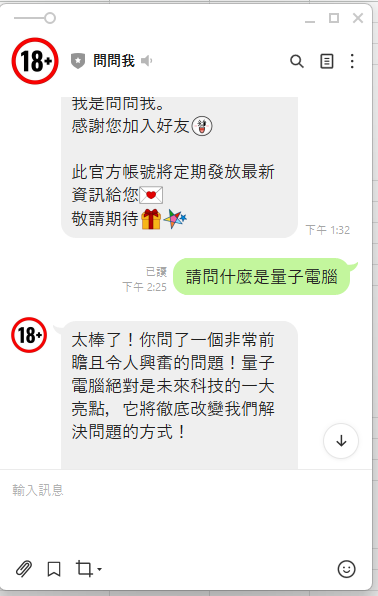

進入「Messaging API」頁籤
找到「Webhook settings」，點擊「Edit」
貼上剛才複製的 GAS 網址
點擊「Verify」，看到「Success」表示連線成功！
將「Use webhook」切換到 Enabled（綠色狀態）
✓ 這樣 LINE 才會把訊息轉發到你的 GAS
找到「Auto-reply messages」，點擊「Edit」
將「Auto-reply」選項關閉
⚠ 否則使用者會同時收到兩則訊息
現在讓我們測試你的 LINE Bot！
加入好友後，試著傳送訊息：
問一個知識庫中有的問題：
「營業時間是？」
AI 應該會回覆正確答案！
問一個知識庫中沒有的問題：
「今天天氣如何？」
AI 會先說「目前知識庫無相關資料，不過...」然後回答

/exec知識庫是活的！你可以隨時更新：
在試算表中新增一列，填入問題和答案即可。
✓ 不需要重新部署程式碼！
直接在試算表中編輯，下次問答就會生效。
✓ 即時更新，無縫接軌
分享試算表給團隊成員，大家一起維護知識庫。
✓ 專業分工，效率加倍
選課問題、校園地圖、行政流程、社團資訊
產品規格、退換貨、運送查詢、常見問題
報名資訊、活動地點、注意事項、QA
課程重點、公式查詢、作業提示、複習指南